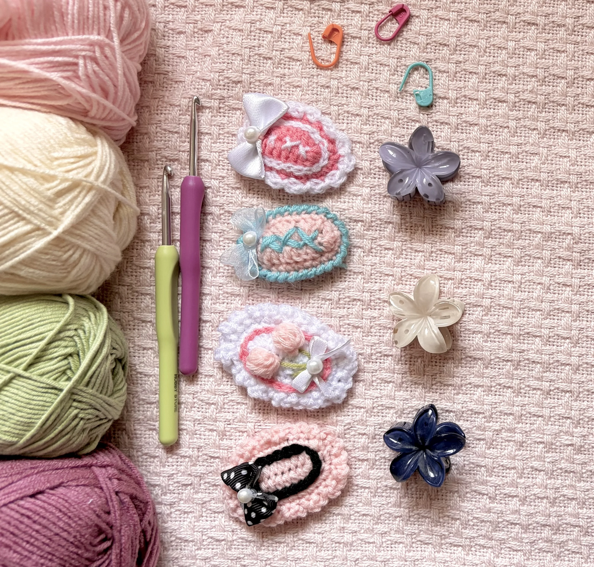
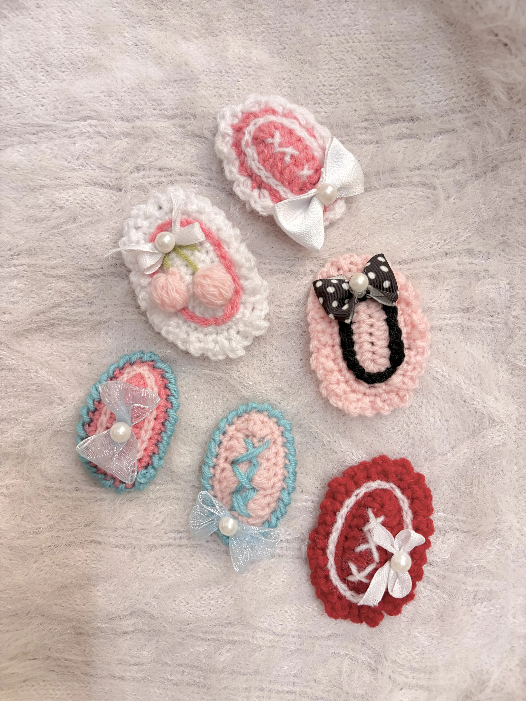

Free Crochet Pattern
Cute Crochet Hair Clips | Easy Beginner Tutorial + Free Written Pattern
These cute and beginner-friendly crochet hair clips are quick to make, customizable, and perfect for adding a soft dreamy touch to your outfits. You can create different styles just by changing the border, colors, or tiny decorations.

About the Pattern
These crochet hair clips are simple, beginner-friendly accessories that are quick to make and easy to customize. You can experiment with different colors, borders, and small decorations to create your own style.
I’d still highly recommend watching the full video tutorial alongside this written pattern, especially for the borders and assembly process, as it makes the steps much easier to follow visually.
Video Tutorial
Prefer to crochet along with a video? Watch the full tutorial on YouTube.
Materials
- Yarn in any colors you like
- Crochet hook suitable for your yarn (4 mm works great)
- Metal hair clips
- Felt
- Hot glue
- Needle and thread
- Pearls, bows, or embroidery yarn for decoration
Want to shop the materials?
Check out the materials here →Abbreviations
Written Pattern
How to Crochet the Hair Clips
1. Universal Hair Clip Base
Foundation
Make a slip knot and chain 10.
Round 1
- Skip the first 2 chains.
- Make 7 dc.
- In the last chain, make 4 dc in the same stitch.
- Work along the opposite side with 6 dc.
- In the final stitch, make 3 dc.
- Slst into the first dc and ch 1.
Round 2
- Make 8 sc.
- For the next 3 stitches, make sc increases.
- Make 1 sc in each of the next 7 stitches.
- Again make sc increases in the next 3 stitches.
- Slst into the first stitch.
Your oval base is now complete
2. Border Options
Option A — Frill Edge
- Ch 3.
- Slst into the next stitch.
- Repeat around the entire edge.
Option B — Crab Stitch Border
Using a new yarn color:
- Ch 1.
- Work reverse single crochet by inserting your hook into the stitch behind.
- Repeat all around for a neat twisted border effect.
3. Decorative Details
Slip Stitch Design
Use a contrasting yarn color to create decorative stitched lines on the surface.
Tiny Tulip
Create a small flower using a magic ring and popcorn stitches, then glue it onto the clip.
Extra Cute Details
Add:
- Tiny bows
- Pearls
- White embroidery stitches
- Charms
4. Final Assembly
- Cut a small oval piece of felt.
- Make a slit in the center and insert the hair clip.
- Apply hot glue to the back of the crochet piece.
- Attach firmly onto the felt and clip assembly.
Style Tip
Pastel shades create a soft dreamy aesthetic, while bright contrasting colors make the clips extra playful and fun
6. Finish
Your crochet hair clip is ready to style and wear!
A Little Note from Stitchy Days ♡
Hi there
Thank you so much for trying one of my crochet patterns! I’m so happy to have you here, and I hope you enjoy making this project as much as I enjoyed creating it.
If you make something using this pattern, I’d love to see it! Feel free to tag Stitchy Days when you share your finished project. Seeing your creations means so much to me as I continue growing this little crochet corner.
Thank you for supporting my work and happy crocheting! ♡
